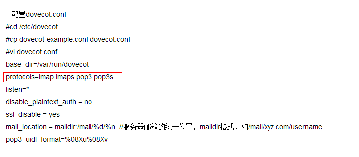

Postfix环境搭建
Postfix
电子邮件系统
电子邮件系统由用户代理MUA（Mail User Agent）以及邮件传输代理MTA（Mail Transfer Agent）,MDA（Mail Delivery Agent）邮件投递代理组成，MUA指用于收发Mail的程序，MTA指将来自MUA的信件转发给指定用户的程序，MDA就是将MTA接收的信件依照信件的流向（送到哪里）将该信件放置到本机账户下的邮件文件中（收件箱），当用户从 MUA 中发送一份邮件时，该邮件会被发送送到MTA，而后在一系列MTA中转发，直到它到达最终发送目标为止。
MUA（Mail User Agent），称之为邮件用户代理，用户通过MUA接收邮件
常见的MUA软件有：
- Outlook
- Mac Mail
- Thunderbird
- Foxmail
- Mutt
对于个人用户来讲，可能使用的最多还是网页方式查看电子邮件，这些网页也可以成为基于Web的MUA。
IMAP、POP3
MUA接受邮件使用的是IMAP或POP3这种标准邮件接收协议
IMAP、POP3负责从邮件服务器上将特定用户的邮件抓取下来
我们可以控制抓取后是否在邮件服务器上保存邮件
IMAP主要优势在于客户端的所有操作都与邮件服务器同步，而POP3则是将邮件下载下来，所有的操作都在本地，不影响服务器上保存的邮件。
IMAP的用户体验更好。
MTA
SMTP（Simple Mail Transfer Prorocol）是邮件发送的标准协议，MUA通过SMTP协议与邮件服务器通信，实现邮件发送。
SMTP就是我们所说的MTA（Mail Transfer Protocol）
所有的MTA都是对SMTP的一种实现
Linux中最主流的MTA有：sendmail、postfix
MTA只负责邮件传输，邮件保存是有MDA完成的。
MDA
MDA（Mail Deliver Agent）负责将MTA接受到的邮件保存哎邮件服务器上，通常MTA与MDA是紧紧结合在一起的。
Linux上，邮件默认保存目录是：
1 | |
MDA除了保存邮件，更重要的是对邮件进行垃圾邮件处理和病毒扫描。
Linux常用的MDA有：procmail、maildrop
Sendmail、postfix默认使用的MDA是promail
MRA
MRA（Mail Receive Agent）实现IMAP、POP3等协议，负责与MUA交互，将服务器上的邮件通过IMAP或者POP3协议递送给客户端。
Linux下使用最广泛的的MRA是：Dovecot
为了安全起见，现代邮件一般会使用数字证书对传输协议进行加密，所以一啊不能需要支持的协议有：IMAP，POP3，IMAPS和POPS。
postfix简介
postfix是Wietse Venema在IBM的GPL协议之下开发的MTA（邮件传输代理）软件。postfix是Wietse Venema想要为使用最广泛的sendmail提供替代品的一个尝试。在Internet世界中，大部分的电子邮件都是通过sendmail来投递的，大约有100万用户使用sendmail，每天投递上亿封邮件。这真是一个让人吃惊的数字。Postfix试图更快、更容易管理、更安全，同时还与sendmail保持足够的兼容性。
postfix的优势：
- postfix速度比sendmail约快3倍
- 更加稳定健壮
- 配置更加灵活
- 大多数postfix进程运行在较低的权限下，安全性更高
安装postfix
1 | |
配置postfix
1 | |
dovecot配置
安装dovecot
1 | |
开启支持的协议

发送测试邮件：
mail –vs “test” kobe@bxy.com
练习：
- 配置foxmail
- 搭建webmail